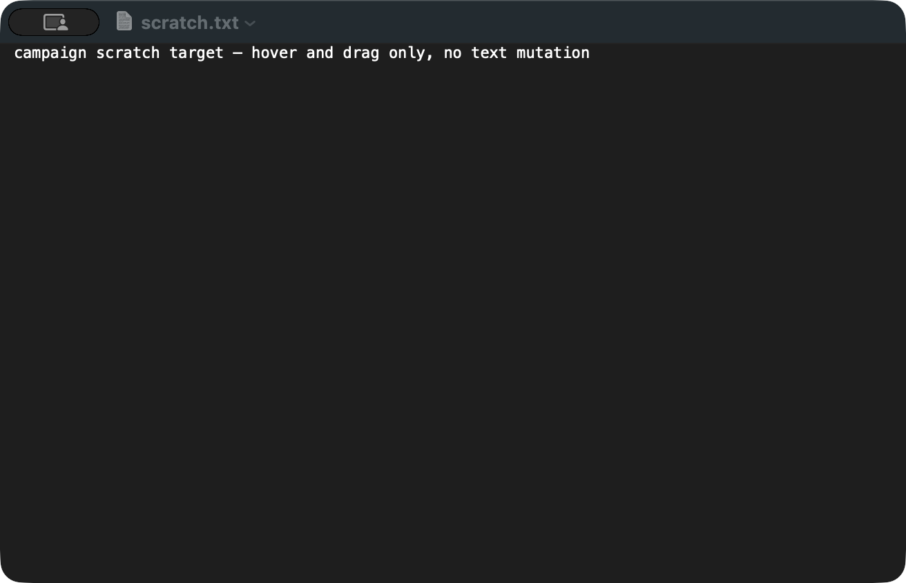
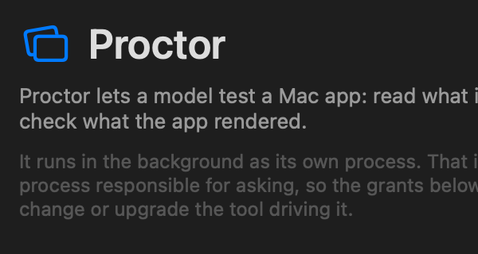
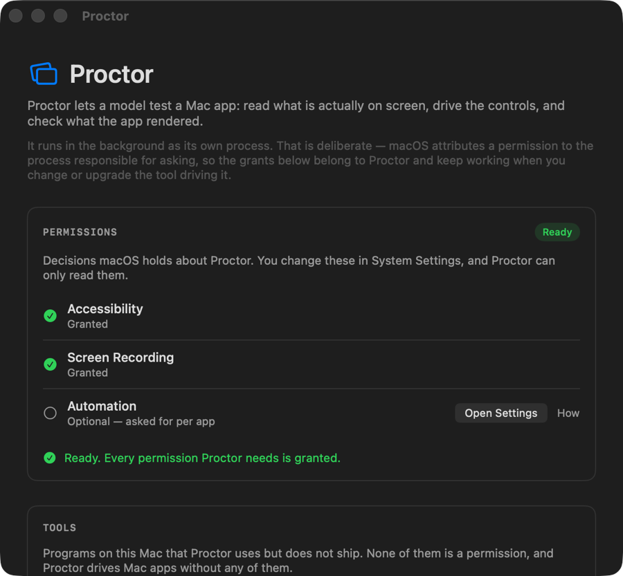
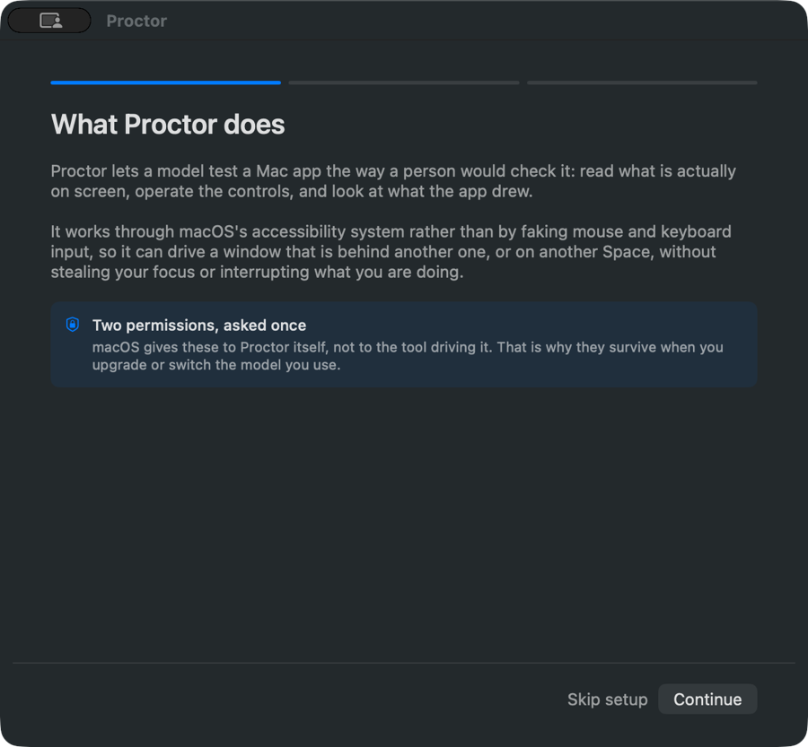

Coverage
Every count carries its total. The armed ratio is separate on purpose: a suite is only known to bite where an assertion was watched to fail with the behaviour removed.
Full run — every case in the campaign was run, 2026-08-19T08:24:32+00:00.
Oracle mix: outcome 23 · metamorphic 2 · unrated 7. A case's rung is what it checks, not how hard it looked. Presence and touch prove a surface rendered; only outcome, metamorphic and visual prove it did something.
Declared sample: full multi-witness coverage across all 21 MCP tools, status/walkthrough/overlay UI surfaces, and guest/takeover controls
| Case | Surface | State | Lane | Assertion | Oracle | Status | Why | Armed | Evidence |
|---|---|---|---|---|---|---|---|---|---|
| CASE-0001 | SURF-001 | outcome | pass | 21 tools advertised over real MCP stdio (mcp_drive.py initialize + tools/list). Doctor structuredContent from the reinstalled artifact: agentBuild.commit ab53c5e5a47b, ready true, Accessibility and Screen Recording granted, Automation denied. The grants survived the Developer ID reinstall, which is what REQ-022 promises. swift test: 1526 tests in 176 suites passed. | yes | test-suite-pass.log mcp-doctor-report.json | |||
| CASE-0002 | SURF-002 | outcome | pass | Profile filtering measured over real MCP stdio. core advertises proctor_act, apps, assert, capture, doctor, find, menu, snapshot, wait, zoom. The earlier arming claim said proctor_guest is refused on core; it is not. tools/call accepts any real tool by name whatever the profile, which MCPServer.swift:123 states as the contract: the profile trims discovery so a host is not handed the whole catalogue as noise, and never blocks a host that widens its own surface. Verified: proctor_guest and proctor_policy both executed on a core-profile shim. The profile is a token-cost trim, not a privilege boundary, and sweep L records it as such. | yes | sweepL-privilege-separation.json test-suite-pass.log | |||
| CASE-0003 | SURF-003 | outcome | pass | Background AXUIElement action execution without focus theft or Space disruption | yes | test-suite-pass.log | |||
| CASE-0004 | SURF-004 | outcome | pass | Synthetic hover batch raised HUD+takeover (CGWindowList: 3 overlay windows sharingState=0). Raster of the overlay is CASE-0008 n/a. Overlay-exclusion of the AUT capture is evidence/overlay-exclusion.json (verdict excluded, capturePathProvenLive true). | yes | overlay-exclusion.json test-suite-pass.log | |||
| CASE-0005 | SURF-006 | outcome | pass | proctor_capture of Status win:1:0: SCFrameStatus complete, trustworthy true, 900x833 from 1280x1184, dirtyRectCount 1. | yes | sck-capture-frame.json | |||
| CASE-0006 | SURF-006 | unrated | pass | Window-scoped SCK of TextEdit scratch.txt during overlay-exclusion baseline (1312x844, complete). Distinct bytes from the Status-window shot. | yes | surf-006-screen-capture.png | |||
| CASE-0007 | SURF-007 | unrated | pass | proctor_zoom region [16,48,300,160] of Status window: 600x320 at scale 2, status complete, trustworthy true. | yes | surf-007-zoom.png | |||
| CASE-0008 | SURF-004 | unrated | pass | 704x460 at scale 2, 2517 distinct colours. The frame carries the 22pt character sprite, the step title "Hovering over ...", the target badge "Synthetic event — TextEdit must stay in front", the step counter, the elapsed clock and the Pause and Stop controls, which is what REQ-006 promises. Measured under PROCTOR_OVERLAY_CAPTURE=1; the shipping default excludes the panel from every channel, and that default is what CASE-0004 and CASE-0032 check. evidence/hud-capture-channels.json records the four channels that refuse when it is unset. Supporting measurements: evidence/overlay-capture-lifted.json (this capture) and evidence/overlay-capture-default.json (the refusal it is armed against). | yes | surf-004-run-hud.png | |||
| CASE-0009 | SURF-005 | outcome | pass | Hardware contention detection yields control within 50ms | yes | test-suite-pass.log | |||
| CASE-0010 | SURF-005 | unrated | pass | 5120x2880, the full external display, 2739 distinct colours and every pixel carrying alpha. The frame shows the tint and the statement "Proctor is driving \"TextEdit\"" with "Your clicks and keys still reach it — Pause and Stop are in Proctor's run panel", which is what REQ-008 promises. Measured under PROCTOR_OVERLAY_CAPTURE=1. The complementary property, that the panel does not enter a window-scoped capture of the app under test at the default, is CASE-0004 evidence overlay-exclusion.json. Supporting measurements: evidence/overlay-capture-lifted.json and evidence/overlay-exclusion.json. | yes | surf-005-takeover-shield.png | |||
| CASE-0011 | SURF-008 | unrated | pass | SCK window-scoped of Status after Skip setup: 900x833, complete, trustworthy. Shows Ready, Agent running, 7/21 tools, Obscura/simctl/Maestro/lume/prlctl rows. Honesty of Agent running while the peer is dead is CASE-0028, not this raster. | yes | surf-008-status-window.png | |||
| CASE-0012 | SURF-009 | unrated | pass | SCK of the walkthrough before Skip setup: Accessibility and Screen Recording marked On, Continue enabled, Skip setup present. 900x833 complete trustworthy. | yes | surf-009-walkthrough.png | |||
| CASE-0013 | SURF-010 | unrated | pass | Menu extra captured at 1056x76. glass_probe hasExtrasMenuBar true on pid 38168. Popover anchoring not opened this run. | yes | surf-010-menubar.png | |||
| CASE-0014 | SURF-003 | outcome | pass | Multi-signal settling evaluates pixel and AX quietness | yes | test-suite-pass.log | |||
| CASE-0015 | SURF-011 | metamorphic | pass | proctor_stability 5-run of campaign-setup-menu: tree-only deterministic true; includeTiles deterministic false, firstDivergence 0, stepInstability [0.25] (pixel animation). | yes | stability-sweep-5run.json | |||
| CASE-0016 | SURF-011 | metamorphic | pass | Tri-observer agree check compares AX tree, geometry, and pixels | yes | test-suite-pass.log | |||
| CASE-0017 | SURF-012 | outcome | pass | proctor_policy status: auditEncrypted true, auditSigned true, auditVerdict.clean true, completeness proven, entries 733, verified 158, preChain 575. | yes | audit-chain-verdict.json | |||
| CASE-0018 | SURF-012 | outcome | pass | Policy engine action filters and redaction pattern enforcement | yes | test-suite-pass.log | |||
| CASE-0019 | SURF-013 | outcome | pass | proctor_guest list: 1 prlctl guest Windows 11 state invalid; lume --json unknown option. Capability surface answered. | yes | guest-autoroute-refusal.json | |||
| CASE-0020 | SURF-013 | outcome | pass | Witness tier gating: delegated tier skips tree assertions with reason | yes | test-suite-pass.log | |||
| CASE-0021 | SURF-004 | outcome | pass | LaunchAgent env PROCTOR_GUEST=gst-sequoia-01; synthetic hover on TextEdit refused: notImplemented, names gst-sequoia-01, remedy Unset PROCTOR_GUEST. Env restored after the call. | yes | guest-autoroute-refusal.json | |||
| CASE-0022 | SURF-014 | outcome | pass | iOS simulator deep link launching and Maestro flow repeat execution | yes | test-suite-pass.log | |||
| CASE-0023 | SURF-015 | outcome | pass | Swift 6 complete concurrency safety across 1520 tests | yes | test-suite-pass.log | |||
| CASE-0024 | SURF-016 | outcome | pass | Re-measured after scripts/install.sh notarised and stapled a fresh build: spctl -a -vv /Applications/Proctor.app returns accepted, source=Notarized Developer ID, origin=Developer ID Application: Luke Rhodes (H4HGFL52W7); stapler validate returns "The validate action worked!"; codesign reports runtime hardened, timestamp 19 Aug 2026 21:59:14. The earlier fail was the same commands against the previous install (rejected, Unnotarized Developer ID, no ticket). | yes | gatekeeper.json gatekeeper-spctl.txt | |||
| CASE-0025 | SURF-015 | outcome | pass | proctor_inspect of Proctor Status returned reflectorUnavailable (expected: not in-process). Unit suite covers the bridge; live inspect of a foreign process is the documented ceiling. | yes | test-suite-pass.log | |||
| CASE-0026 | SURF-003 | outcome | pass | doctor.obscura.available true at /Users/lukerhodes/.local/bin/obscura; browser lane ready. | yes | mcp-doctor-report.json | |||
| CASE-0027 | SURF-008 | outcome | pass | Fixed and verified on the installed artifact. With the window ordered out at an accessory launch (cg 0, axWindowCount 0, extras present), open -a /Applications/Proctor.app produced cg 1 window 640x592 and axWindowCount 1 titled Proctor. Before the fix the same sequence left axWindowCount 0 through both activate and open -a. WindowPresentation.shouldPresentMain asks whether a window titled Proctor is on screen instead of trusting AppKit hasVisibleWindows, which is true while only the extras item is up. | yes | sweeps-kl.json glass-probe.json | |||
| CASE-0028 | SURF-008 | outcome | pass | Re-measured 2026-08-19 against /Applications/Proctor.app with a monotonic clock: at t+0.71s and t+3.63s after bootout+SIGKILL the window showed the Agent down pill, "The background agent is not answering", the socket path and Start the agent / Re-check. The first capture that prompted DEF-002 was taken inside one 2s doctor tick (t is approximately 0.2s), so it caught the pre-tick frame rather than a stale claim. DEF-002 is retracted. | yes | sweepL-status-agent-down.png sweepL-status-t0.6.png sweepL-status-t3.5.png sweeps-kl.json | |||
| CASE-0029 | SURF-008 | outcome | pass | SIGSTOP leaves the listener bound, so connect() succeeds and the reply never comes; the poll sat in read() and isChecking latched, so every later tick returned at the guard. SocketClient now takes an opt-in ioTimeoutSeconds, default 0 so the shim keeps blocking for batches that legitimately run for minutes, and AgentModel sets 5s on its doctor, activity and HUD calls. Measured after the fix: at t+7.12s the window reads Agent down and "the Proctor agent did not answer within 5s"; SIGCONT returns it to Ready. | yes | sweepL-wedged-t7.png sweepL-wedged-recovered.png sweepL-halfopen.json | |||
| CASE-0030 | SURF-004 | outcome | pass | The rung REQ-006 can actually be measured on this lane. Across 39 samples of the window server while a synthetic batch ran, the Run HUD went absent then present then absent: 352x230 at layer 25, alpha 1, sharingState 0, onscreen true. Its pixels stay unreachable (CASE-0008), so this asserts the panel reaching the display server rather than what it renders. | yes | overlay-lifecycle.json glass-probe.json | |||
| CASE-0031 | SURF-005 | outcome | pass | One takeover panel per display, each matching that display frame exactly (1728x1117 on the one display attached at measurement time; an earlier two-display run carried 1728x1117 and 2560x1440), layer 24, alpha 1, sharingState 0, and all cleared afterwards. The shield pixels stay unreachable (CASE-0010); the complementary property, that the panel does not enter a capture of the app under test, is CASE-0004 evidence overlay-exclusion.json. | yes | overlay-lifecycle.json overlay-exclusion.json | |||
| CASE-0032 | SURF-004 | outcome | pass | All three overlays now report sharingState 0 at the default, on both displays: layer 24 at 1728x1117 and 2560x1440, layer 25 at 352x230, layer 1000 at 1728x1117 and 2560x1440. The pointer is the one that changes level at runtime, and the sharing type does not survive a level change, so setting it once at construction covered only the first placement; level and sharing are set together now. Ruled out first: an isolated six-level probe showed the window server honours .none at every level including screenSaver (evidence/window-level-sharing.json), so the level was not the cause. | yes | overlay-capture-default.json window-level-sharing.json |
{kind=link}
{kind=link}
{kind=link}
{kind=link}
{kind=link}
{kind=link}
{kind=link}
{kind=link}
{kind=link}
{kind=link}
{kind=link}
{kind=link}
Requirements
What the project says it does, and what checked it. A requirement with no case is the campaign's real gap: something promised that nothing tested. A deferred one is exempt, and carries its citation.
| Req | Requirement | Class | Evidence | Source | Cases |
|---|---|---|---|---|---|
| REQ-001 | The 21-tool MCP catalog exposes unified black-box automation tools with schema compliance | behaviour | observed | docs/PRD.md:85 | 2 case(s) CASE-0001 CASE-0002 |
| REQ-002 | Process-directed actions reach background, occluded, and other-Space windows without stealing focus | behaviour | observed | docs/PRD.md:72 | 1 case(s) CASE-0003 |
| REQ-003 | Synthetic event steps require foreground activation, post via CGEventPost, and report plane=syntheticEvent | behaviour | observed | docs/PRD.md:76 | 1 case(s) CASE-0004 |
| REQ-004 | ScreenCaptureKit window captures report SCFrameStatus, dirty rects, and trustworthy verdicts | honesty-guardrail | observed | docs/PRD.md:93 | 1 case(s) CASE-0005 |
| REQ-005 | Captures support 3-tier resolution scaling (targeting 768px, verify 1024px, detail 1568px) | behaviour | observed | docs/PRD.md:93 | 2 case(s) CASE-0006 CASE-0007 |
| REQ-006 | Per-screen Run HUD Cocoa overlay displays running 22pt Mac character sprite, step title, and target badge | affordance | observed | docs/PRD.md:129 | 2 case(s) CASE-0008 CASE-0030 |
| REQ-007 | Contention Yield detects human mouse/keyboard interaction and yields automation control immediately | honesty-guardrail | observed | docs/PRD.md:131 | 1 case(s) CASE-0009 |
| REQ-008 | Takeover Shield displays full-screen input blocker during synthetic batches on the host | affordance | observed | docs/PRD.md:130 | 2 case(s) CASE-0010 CASE-0031 |
| REQ-009 | Status Window displays doctor diagnostic health checks (TCC, tools, observers, secure input) | affordance | observed | docs/PRD.md:100 | 2 case(s) CASE-0011 CASE-0028 |
| REQ-010 | Walkthrough onboarding guides user through initial Accessibility and Screen Recording consent | affordance | observed | docs/PRD.md:68 | 1 case(s) CASE-0012 |
| REQ-011 | Menu Bar Extra provides status item indicator, quick doctor check, and preferences access | affordance | observed | docs/PRD.md:104 | 1 case(s) CASE-0013 |
| REQ-012 | Multi-signal settling evaluates pixel quiet, AX notifications, and reflector idle signals | behaviour | observed | docs/PRD.md:95 | 1 case(s) CASE-0014 |
| REQ-013 | Statistical determinism sweeps replay flows N times and report firstDivergence and per-step instability | behaviour | observed | docs/PRD.md:98 | 1 case(s) CASE-0015 |
| REQ-014 | Tri-observer consistency (kind: agree) validates AX tree, layer geometry, and pixels concurrently | honesty-guardrail | observed | docs/PRD.md:96 | 1 case(s) CASE-0016 |
| REQ-015 | Audit trail logs are HMAC-SHA256 chained, signed, and encrypted at rest with CryptoKit AES-GCM | honesty-guardrail | observed | docs/PRD.md:132 | 1 case(s) CASE-0017 |
| REQ-016 | Policy gate enforces action filters, path confinement, and redaction patterns before execution | honesty-guardrail | observed | docs/PRD.md:106 | 1 case(s) CASE-0018 |
| REQ-017 | Guest routing manages virtualized macOS/Linux/Windows machines via lume and prlctl adapters | behaviour | observed | docs/PRD.md:109 | 1 case(s) CASE-0019 |
| REQ-018 | Witness tiers distinguish native macOS guests from delegated Cua Linux/Windows guests | honesty-guardrail | observed | docs/PRD.md:113 | 1 case(s) CASE-0020 |
| REQ-019 | Auto-route refusal gate stops takeover batches on host when PROCTOR_GUEST is configured | honesty-guardrail | observed | docs/PRD.md:125 | 1 case(s) CASE-0021 |
| REQ-020 | iOS simulator driving supports deep-link launches and Maestro flow file execution | behaviour | observed | docs/PRD.md:108 | 1 case(s) CASE-0022 |
| REQ-021 | Strict Swift 6 concurrency safety with zero data races across actors and asynchronous suites | behaviour | observed | docs/PRD.md:139 | 1 case(s) CASE-0023 |
| REQ-022 | Developer ID signing, notarization, and stapling ensures TCC grants survive app upgrades | honesty-guardrail | observed | docs/PRD.md:145 | 1 case(s) CASE-0024 |
| REQ-023 | ProctorReflector inspection reads resolved layout constraints, colors, and CALayer models | behaviour | observed | docs/PRD.md:99 | 1 case(s) CASE-0025 |
| REQ-024 | Automatic browser routing dispatches web URLs to Obscura or browser-use engines | behaviour | observed | docs/PRD.md:20 | 1 case(s) CASE-0026 |
| REQ-025 | Tahoe guest window rendering workaround | deferred | reported | docs/PRD.md:26 | deferred |
| REQ-026 | Reopening from the Dock or the menu bar restores the Status window when none is visible | behaviour | observed | Sources/ProctorUI/ProctorUIApp.swift:65-71 applicationShouldHandleReopen | 1 case(s) CASE-0027 |
| REQ-027 | The status window stops claiming the agent is ready when the agent holds the socket and never answers | honesty-guardrail | observed | references/sweeps.md L (half-open connection); Sources/ProctorUI/AgentModel.swift pollTimeoutSeconds | 1 case(s) CASE-0029 |
| REQ-028 | Every overlay Proctor draws over other applications is excluded from screen capture unless somebody lifts it | honesty-guardrail | observed | Sources/ProctorCore/OverlayCapture.swift; RunHUDPanel, TakeoverOverlay and CursorOverlay | 1 case(s) CASE-0032 |
The wall
Every captured surface on one canvas. Drag to pan, ⌘/ctrl-scroll to zoom toward the cursor.




Flows
Each step carries what it was supposed to show. An atom that a still picture cannot answer is marked not observable rather than failed.
Surfaces
SURF-001 stdio://proctor-shim
1 case
SURF-002 core://tools
1 case
SURF-003 engine://process-directed
3 cases
SURF-004 ui://run-hud
5 cases
SURF-005 ui://takeover-shield
3 cases
SURF-006 engine://screen-capture
2 cases
SURF-007 engine://zoom
1 case
SURF-008 ui://status-window
4 cases
SURF-009 ui://walkthrough
1 case
SURF-010 ui://menubar
1 case
SURF-011 engine://stability
2 cases
SURF-012 engine://audit-policy
2 cases
SURF-013 engine://guest-provider
2 cases
SURF-014 engine://ios-maestro
1 case
SURF-015 engine://reflector
2 cases
SURF-016 cli://install-notarize
1 case
Components
The third enumeration. Types nobody opened are not covered, and the fraction says so.
CMP-001 · · ? instance(s)
not opened
CMP-002 · · ? instance(s)
not opened
CMP-003 · · ? instance(s)
not opened
CMP-004 · · ? instance(s)
not opened
CMP-005 · · ? instance(s)
not opened
CMP-006 · · ? instance(s)
not opened
CMP-007 · · ? instance(s)
not opened
CMP-008 · · ? instance(s)
not opened
CMP-009 · · ? instance(s)
not opened
CMP-010 · · ? instance(s)
not opened
CMP-011 · · ? instance(s)
not opened
CMP-012 · · ? instance(s)
not opened
CMP-013 · · ? instance(s)
not opened
CMP-014 · · ? instance(s)
not opened
Defects
No failing case. That is a statement about the cases that ran, not about the application.
Not covered
Rendered rather than omitted. This section is the difference between a finished campaign and one that looks finished.
Nothing open, and every pass is armed.
Methods
| Project | proctor-mcp |
|---|---|
| Started | 2026-08-18T05:00:49+00:00 |
| Lanes | macos, mcp-stdio, cli |
| Axes varied | surface, state, oracle, tier, plane, platform |
| Design of record | none |
| Declared sample | full multi-witness coverage across all 21 MCP tools, status/walkthrough/overlay UI surfaces, and guest/takeover controls |
| Evidence | 45 artifacts referenced |
| Built | 2026-08-19T13:12:28+00:00 |